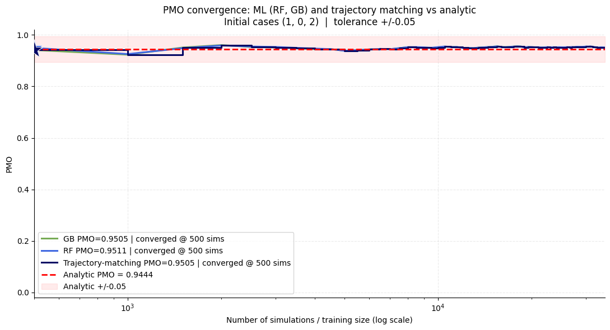
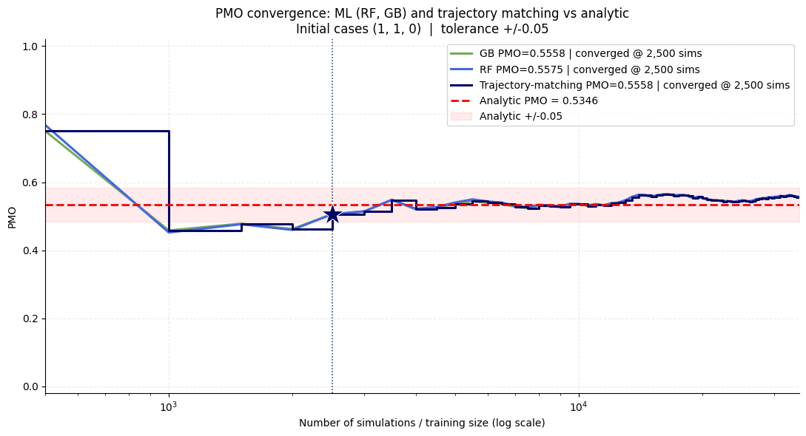
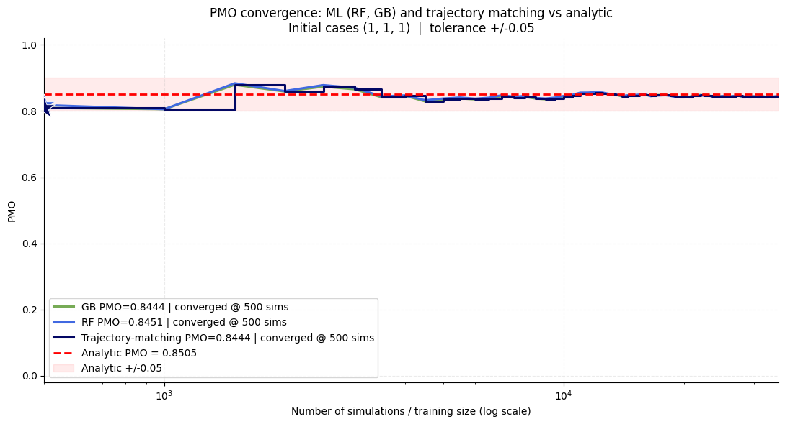

Overview
The numbers of cases in each of first T weeks of the outbreak are used as predictors, while the outcome is whether the trajectory becomes a major outbreak. The model is trained on the full simulated dataset and used to estimate outbreak probability from the observed early case pattern.
The machine learning model is designed to approximate the same outbreak probability that is computed analytically and through trajectory matching, but from observed early data alone.
Input
- Observed early weekly case counts, for example
[1, 2, 0]or[1, 3, 1] - Trained model(s) built from simulated outbreak trajectories
- Standardised feature vectors that match the training pipeline
Output
- Predicted probability of a major outbreak
- Comparison against the analytical solution
- Model convergence as the number of training simulations increases
Convergence against the analytical solution
These figures show how the model behaves when it is trained on a range of dataset sizes, helping us assess how quickly the predictions converge toward the analytical outbreak probability. Each example compares the model output against the analytical benchmark for a given early case pattern.


